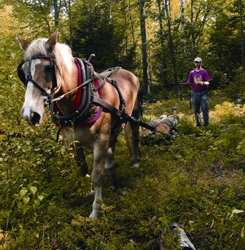
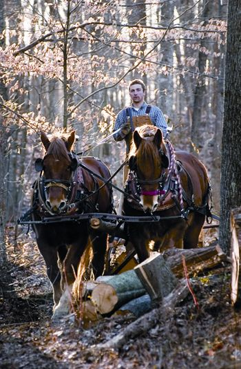
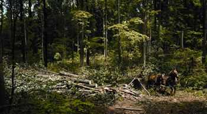
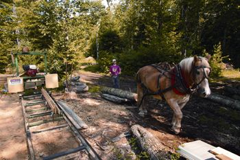
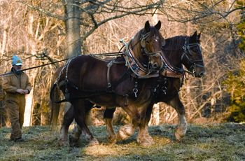
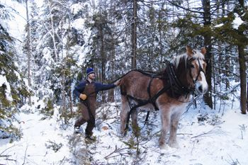

The vision of a team of enormous draft horses pulling a log down a forest path may hearken back to days gone by, but it may be more modern than you think. A sizable movement is underway toward more environmentally sound forest management practices called “modern horse logging” or “restorative forestry.” Perfect for small- to medium-sized woodlands, this method uses selective harvesting to open the forest and allow air and sunlight to reach the healthiest trees. Over time, restorative forestry can increase logging profits and wildlife diversity, while greatly reducing the environmental impact of harvesting trees. Selectively culling weak trees mimics how nature also clears the forest with storms, wind and other natural occurrences. In addition, using horses reduces damage to the land and remaining trees. The healthier trees left standing hold not only the greatest revenue potential, but also the most promise for providing a beautiful, thriving habitat for wildlife, recreation and overall environmental health.
To remove heavy logs from woodland areas, horse loggers rely on sturdy draft horse breeds, such as the Belgian, Suffolk Punch and Percheron. Because no heavy machines are involved, horse logging is low-impact. A horse typically weighs about 1,600 pounds, whereas a rubber-tired skidder can weigh up to 10,000 pounds.
A few organizations are spearheading the movement toward modern horse logging, including the Healing Harvest Forest Foundation (HHFF), a nonprofit group based in Virginia, as well as the North American Horse and Mule Loggers Association. (See “Resources” for more on these organizations.) Jason Rutledge, president of the HHFF, spends several weeks each year on the road endorsing the benefits of horse logging. “Horses are the ultimate low-impact overland extraction technique available, period,” he says.
Horse logging usually involves harnessing a draft horse that then drags or “skids” logs along the ground to remove them from the forest. Horses can maneuver through the trees much more nimbly than cumbersome machinery, and also can skid logs up or down steep slopes with greater ease. This allows the horse logger a wider range of options in determining which trees to harvest and which to leave intact.
Small-acreage landowners often benefit most from horse logging. In a 1,000-acre forest, industrial log extraction has a significantly higher efficiency margin than horse logging, because skidding machines can drag multiple trees along bulldozed roads - quickly producing big results (and money). But as property size decreases to less than a couple hundred acres, the use of horses becomes more viable. Horses allow you to care for a smaller tract of land in a more intimate, selective way, increasing the land’s overall health and beauty, and avoiding the damage caused by industrial tree harvesting.
The small disturbances on the forest floor caused by horse logging even can be beneficial by helping seeds and nuts germinate. In addition, horses produce natural “fertilizer,” rather than the noxious gas or diesel exhaust that their mechanical counterparts belch into the atmosphere.
Some machines, such as chain saws, are part of the horse logging process. A cart-type device called a log arch also is frequently used to connect a team of horses to the logs. The log arch consists of a cantilever frame on two wheels that elevates the front of the log during skidding, and provides a place for the logger to ride. Mechanized loaders, or booms, also can help load logs at the access road, and nearly any horse logging operation uses trucks to haul logs to the sawmill or bring a portable mill to the site.
The logging methods used in restorative forestry actually increase the health of a forest and make trees grow faster. Research on hardwood forests conducted by the U.S. Department of Agriculture (USDA) in West Virginia concluded that crop trees that are thinned responsibly can increase in diameter as much as three times faster than natural stands. Rutledge describes this process as “worst-first.” In the worst-first method of restorative forestry, unhealthy trees are removed first so they don’t compete with healthy trees for essential resources. Selective harvesting also increases wildlife in the forest and encourages a diversity of animals to move into the woods. For instance, opening a forest to more sunlight enables plants that don’t grow well in the shade to flourish, thus attracting a wider variety of wildlife.
In contrast, high grading, a common practice among industrial forestry operations, takes the best trees and leaves only the poorest specimens intact for the future. Most tree stands have been cut this way for generations, which creates a weaker tree population. Mechanized logging also requires skidding roads to be bulldozed through the forest, permanently scarring the landscape. Additionally, mechanical skidders weighing tens of thousands of pounds compact the forest floor, making ruts and eroding soil in the process.
Even when selective harvesting is attempted with industrial methods, the remaining trees dotting the landscape often are no more than feeble sticks with torn bark and bleeding sap - victims of skidded logs haphazardly slamming against them. Horse loggers tend to fell trees more carefully to avoid damaging higher-value trees. Removing trees in this way eliminates those damaged by weather, previous skidding, fire and other natural blight, while thinning overcrowded areas.
A renewably maintained forest can produce harvestable trees every 10 to 30 years. This ongoing management system is a far cry from the clear-cut ethic. Clear-cutting not only causes severe erosion problems and greatly diminishes the number of large trees, but it also slows harvest rotations to as long as 75 years to allow for regrowth.
If you’re considering selling timber from your land, call your state forest service before beginning, says Laura Polant, a former forest agent for the Virginia Department of Forestry. Educating yourself is the best way to make sound environmental and economic choices regarding your forestry plan. Nearly every state offers free services and information to landowners about renewable forestry practices. Local forestry agents may even mark your timber (tagging trees in preparation for thinning) for no charge to help you ensure the stand is wisely logged and maximize the protection of the woodland in your stewardship. Be sure you tell the forester what’s important to you and what you want to accomplish by removing the trees. It’s important to communicate that you don’t just want to maximize profits from the trees, but also want to maximize the health of the forest. Plus, the advice of a third-party professional with no monetary interest in your logging decisions can help protect you from unscrupulous loggers who may take advantage of unsuspecting landowners.
You also may want to take advantage of cost-share programs available for restorative forestry. In addition to state offerings, the USDA has several programs that reward sound forestry practices. The USDA Forestland Enhancement Program provides cost-share assistance to landowners who improve standing timber, and the Conservation Reserve Program encourages farmers to protect highly erodible cropland with vegetative covers such as trees. Contact your local forest service, or visit the USDA Forest Service for more information on these programs.
Once you’ve looked at all the options and decided to use sustainable forestry for your timber stand, how do you locate a horse logger? Local foresters are often the best way to find loggers in your area - both mainstream and equine. You also can inquire at local feed stores and tack shops, since horse folk in the community are likely to know each other - be sure to check bulletin boards and advertisements taped to windows, too. To see the horse teams in action and come face-to-face with local loggers, attend area horse shows and pulls. You may also find local groups devoted to specific draft horse breeds, which may lead you to a horse logger. And check out Rural Heritage, a publication that supports logging and farming. Its Web site has a comprehensive listing of professional horse loggers across North America, including biographies and contact information (look under “logging camp”). The magazine Small Farmer’s Journal includes lots of material about working with horses. You can also contact the HHFF - see “Resources” below.
If humans could invent a machine that would willingly work, run on renewable fuel and produce new versions of itself to replace older models, why wouldn’t we? In draft horses, Mother Nature has provided these very things, ready for work and with centuries of proven performance. Horses also make great companions for humans and even produce organic soil-enriching fertilizer as a byproduct of their work.
The term “draft” applies not only to horses, but also to any animals that pull heavy work loads. The draft breeds of horses were developed for heavy work over centuries of human influence. Draft breeds, such as the Belgian, Clydesdale, Suffolk Punch and Percheron, are the heaviest of all equines, with thick muscular bodies and relatively short legs perfect for pulling large loads. (See The Suffolk Punch.) The disposition of draft horses also is well suited to this role, as they tend to be slower to react in every circumstance than their hotblooded and thinner cousins, such as thoroughbreds, Arabians and quarter horses.
Working with draft breeds is regaining popularity in North America, even though industrial machines long ago took over the horses’ essential position in the human world. Their resurgence can be attributed to a growing desire for more environmentally sound agricultural practices, as well as the horses’ sheer beauty.
The many generations of human/horse interaction are evident whenever these gentle giants work in a forest, field or even prance in a parade. Whether pulling carts, plows or logs, these equines have a great work ethic imprinted at the genetic level. Capable trainers who develop strong relationships with their horses often find them at the gate in the morning, ready to be harnessed and curious about the day’s endeavors. Some horse trainers can become so attuned to their teams that communication between them becomes nearly telepathic.
Humans generally enjoy watching draft horses work - there’s just something about these magnificent creatures that stirs people. To see animals 15 times our size with feet as big as a human head gently agreeing to be harnessed and directed to work is truly awe-inspiring. Combine several of these slick-coated giants into a team with shiny, well-oiled harnesses, then watch as they bear into their collars, dig in their hooves and tuck their chins to move a heavy load, and it’s easy to see why the draft breeds remain popular for their roles in parades, festivities and horse-pulling competitions.
In addition to show uses, draft breeds remain valuable work animals. The Amish community maintains the tradition of using horsepower for agricultural purposes. And in the American West, draft horses still work on ranches to haul cattle feed and chuck wagons for working cowboys. To gaze upon these giants tilling a field or pulling a log is not only a way to view the past alive today, but also a firsthand glimpse into a sustainable way of life that could return as a necessary part of our future.
COURSES
Healing Harvest Forest Foundation (HHFF)
8014 Bear Ridge Road
Copper Hill, VA 24079
(540) 651-6355
HHFF offers annual Biological Woodsmen Apprenticeships. Grants for the program are awarded on a competitive, funds-available basis. Applications are on the HHFF Web site. Private instruction through their network of practitioners is also available.
Cedar River Horse Logging & Wood Products
51127 130th St.
Lyle, MN 55953
(507) 325-4197
Experienced horse logger Tim Carroll offers a course tailored to individual needs. He’s also president of the North American Horse and Mule Loggers Association.
BOOKS
Common Sense Forestry
by Hans Morsbach
Information on a long-term approach to sustainable forest management.
To order, visit Mother Earth Shopping.
Discovering Natural Horsemanship
by Tom Moates
“Natural horsemanship” seeks to develop an intuitive interaction between horses and humans that fosters willingness in the horse, plus communication near telepathy called “feel.”
Horsekeeping on a Small Acreage
by Cherry Hill
Learn to be a responsible steward of the land and refine your “horsekeeping consciousness.”
To order, visit Mother Earth Shopping.
|
 SCOTT VLAUN With horses, you can remove logs from hard-to-reach places, and do it with minimal impact on the land. |
 ROEY YOHAI Chad Vogel, a member of the Healing Harvest Forest Foundation, works with his team, Ridge and Tray.
|
 ROEY YOHAI Draft horses have been bred for centuries to have short legs and muscular bodies that enable them to pull heavy loads.
|
|
 SCOTT VLAUN By bringing a portable sawmill to the logging site, you can process timber as soon as it’s cut.
|
 ROEY YOHAI Jason Rutledge, president of the Healing Harvest Forest Foundation, and his team, Wedge and Tong. |
 SCOTT VLAUN Often, horse logging occurs in the winter when a layer of snow on the ground makes skidding logs easier.
|